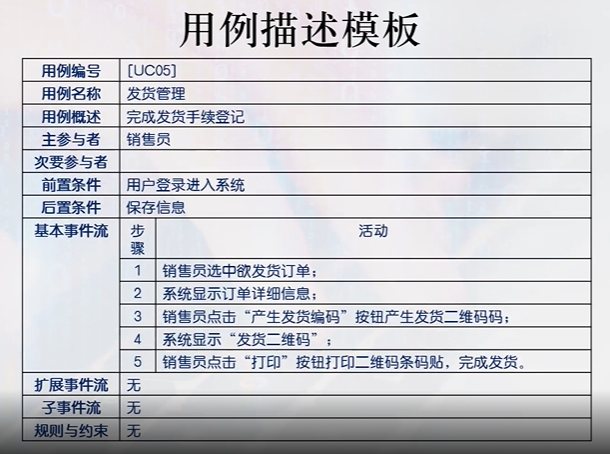

1.寻找角色：
-通过回答问题方式识别角色。
--谁使用系统的主要功能？
--谁需要系统的支持完成日常的工作？
--谁负责维护，管理并保持系统的正常运行？
--系统需要应付（或处理）哪些外部设备？
--系统需要和哪些外部系统交互？
--谁（或什么）对系统运行产生的结果感兴趣？
-通过角色描述模板进一步确定角色。
--例：注册用户
-----------------------------------
|角色：注册用户 |
|角色职责： |
|1.查询商品、下订单 |
|2.支付、评价、退换商品 |
|角色职责识别： |
|1.使用系统主要功能 |
-----------------------------------
2.寻找用例（顶级用例）
-角色需要系统提供哪些功能
--例：注册用户
---查询商品、下订单、购物车管理、支付、评价、打分、申请退换
--例：系统管理员
---用户管理、商品管理
-角色是否需要对系统中的信息进行读、创建、修改、删除或存储
-按角色逐一提问
3.用例描述
-每个功能按一个用例对待，用用例模板进行描述。特别强调基本事件流和扩展事件流及子事件流
-用例描述模板：
-------------------------------------------------------
|用例编号 | [UC05] |
-------------------------------------------------------
|用例名称 | 发货管理 |
-------------------------------------------------------
|主要参与者 | 销售员 |
-------------------------------------------------------
|基本事件流 | 步骤 |
-------------------------------------------------------
|扩展事件流 | |
-------------------------------------------------------
|子事件流 | |
-------------------------------------------------------

4.找出用例之间的关系
-子事件流对应包含关系
--例：换货管理包含发货管理
-扩展事件流对应扩展关系
1.寻找名词
-在需求中寻找名词（一般方法）
-在用例图中寻找名词（包括角色）
--例子：注册用户、销售员、系统管理员、店长、购物车...
2.寻找需要保存的结果
-例：需要保存
--申请退换->退换申请
--支付->支付记录
...
3.完善类属性
-按一般常识的属性
-当前问题领域，有啥属性
-根据系统的功能
-为了实现某些功能
-对象有哪些区别的状态
-整体和部分属性设置
4.确定类之间的结构关系
-泛化关系
-特殊关联：组合聚合
-关联、依赖、实现